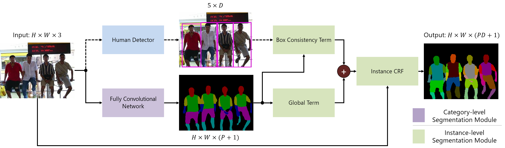

Abstract: Object parsing -- the task of decomposing an object into its semantic parts -- has traditionally been formulated as a category-level segmentation problem. Consequently, when there are multiple objects in an image, current methods cannot count the number of objects in the scene, nor can they determine which part belongs to which object. We address this problem by segmenting the parts of objects at an instance-level, such that each pixel in the image is assigned a part label, as well as the identity of the object it belongs to. Moreover, we show how this approach benefits us in obtaining segmentations at coarser granularities as well. Our proposed network is trained end-to-end given detections, and begins with a category-level segmentation module. Thereafter, a differentiable Conditional Random Field, defined over a variable number of instances for every input image, reasons about the identity of each part by associating it with a human detection. In contrast to other approaches, our method can handle the varying number of people in each image and our holistic network produces state-of-the-art results in instance-level part and human segmentation, together with competitive results in category-level part segmentation, all achieved by a single forward-pass through our neural network.
